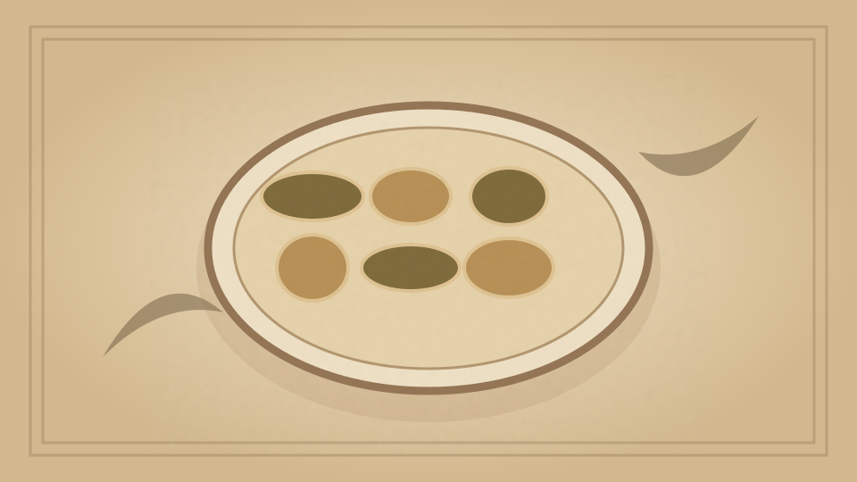

1910 · Fannie Merritt Farmer · EGGS
Scalloped Eggs
The Boston Cooking-School Cook Book

Historical Recipe
The following text is extracted from the 1910 edition, retaining historical terminology and quantities.
Original Ingredients & Directions
3 “hard-boiled” eggs
1 pint White Sauce I
¾ cup chopped cold meat
¾ cup buttered cracker crumbs
Chop eggs finely. Sprinkle bottom of a buttered baking dish with crumbs, cover with one-half the eggs, eggs with sauce, and sauce with meat; repeat. Cover with remaining crumbs. Place in oven on centre grate, and bake until crumbs are brown. Ham is the best meat to use for this dish. Chicken, veal, or fish may be used.
102 Stuffed Eggs
Automatically extracted transcription; editorial verification pending. Historical instructions may not meet modern food-safety standards.